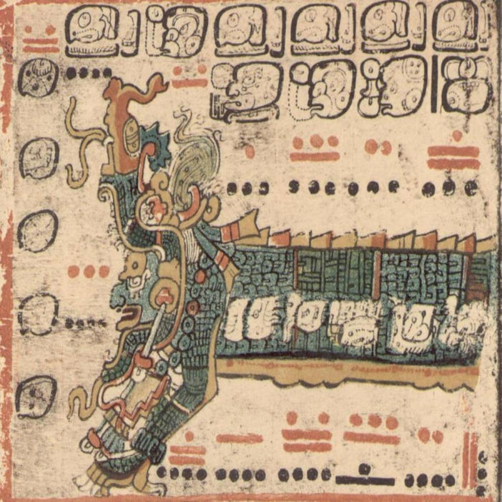
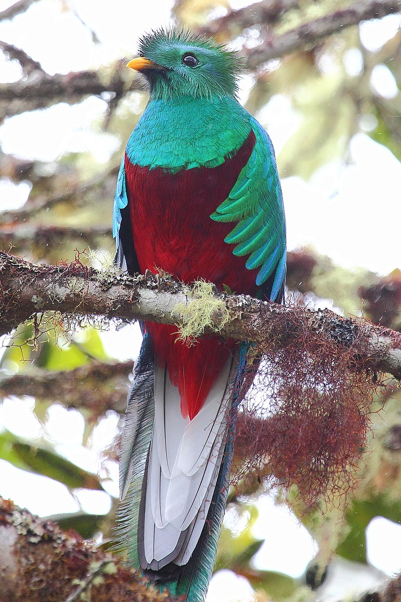
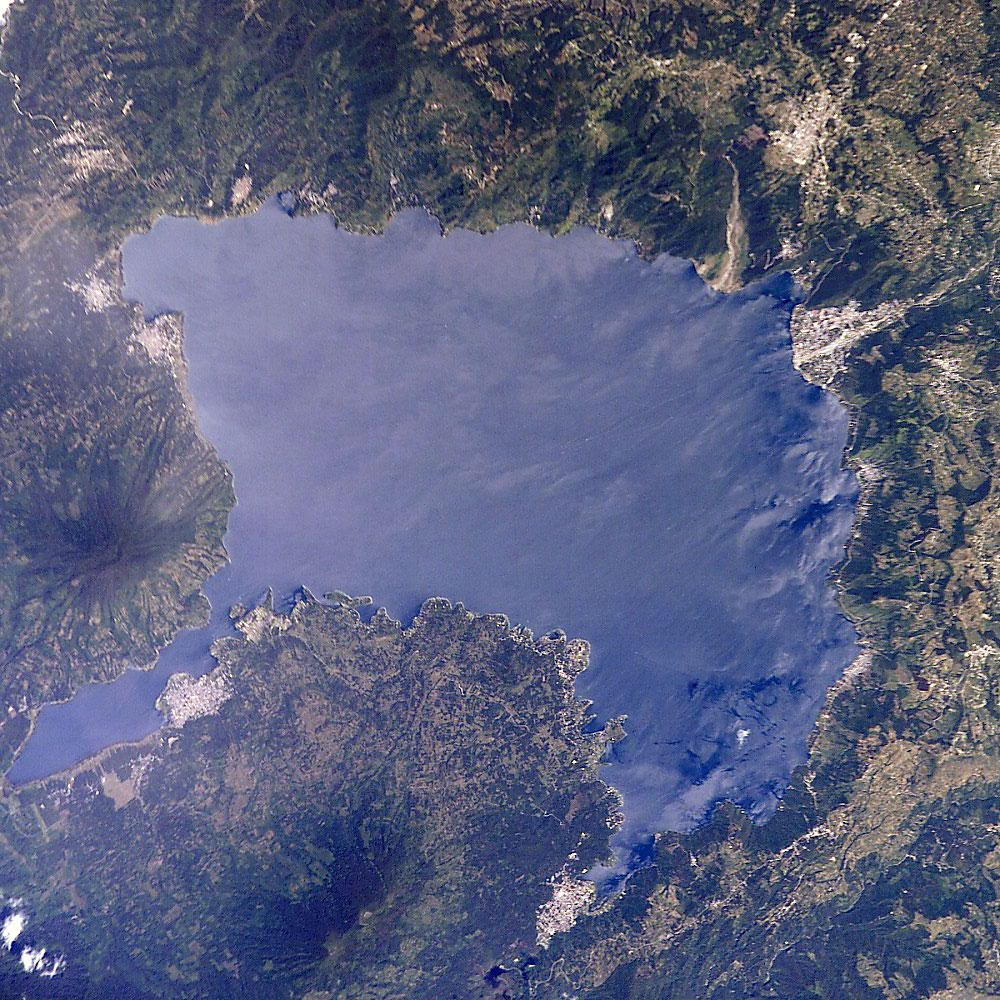

The Feathered Serpent and Q'uq
As was briefly mentioned on the Introduction page, Q'uq'umatz is a Feathered Serpent---a symbol of duality for the people of this region. On one hand, its feathers imply divinity or an ability to fly and reach the sky. On the other, its serpentine nature is representative of its internal likeness to humans or its closeness to the ground and assocation with the other animals on Earth. Though, the Feathered Serpent can also be representative of his power over all levels of the Maya universe. Meaning that his bird-like aspects represent a connection to the celestial parts of the world, while the snake-like aspects represent parts of the underworld.
Similarly, Q'uq'umatz is strongly associated with the male q'uq, or "resplendent quetzal." This bird, as pictured below, is blue-green and red. The former of which may be seen as symbolic of the god's association with the sky and its connection to life. The latter, however, symbolizes fire: the specialty of the other creator god, Tepeu. The bird's physical beauty and religious symbolism are the reasons why this particular species was so treaured by the elites of Mayan society.

Water
Certain ancient Maya texts also associated Q'uq'umatz with water---an aspect of their culture also tied to the underworld. Generally, the K'iche' believed that, as a Feathered Serpent, he was able to move through water very easily. In the Annals of the Cakchiquels, which describes the legends and myths of the Kaqchikel nation, it mentions a group of highland Maya that refer to themselves as the Gucumatz. This was supposedly because their only salavation was to be found in the water. While the Kaqchikel Maya aren't the same as the K'iche' Maya, they are very closely linked. In fact, one of their ancestors, by the name of Gagvitz, was believed to have thrown himself into Lake Atitlan (located in the Guatemalan highlands), resulting in him turning into a deity and raising a storm---Xocomil---or "the wind that carried away sin." Coincidentally, Q'uq'umatz is also associated with the wind as well as clouds.
